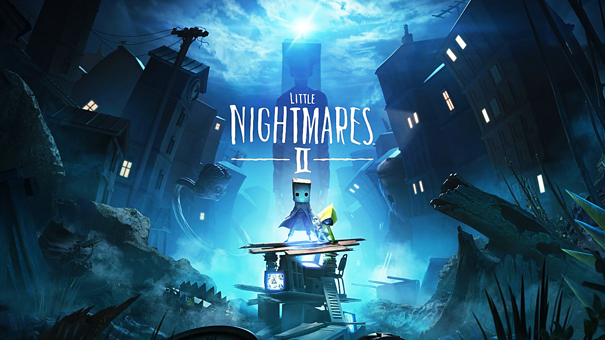
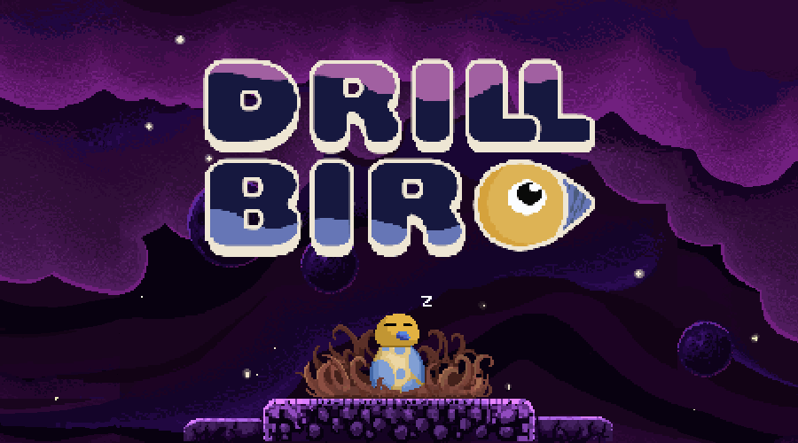
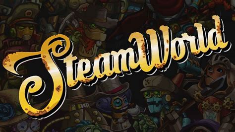
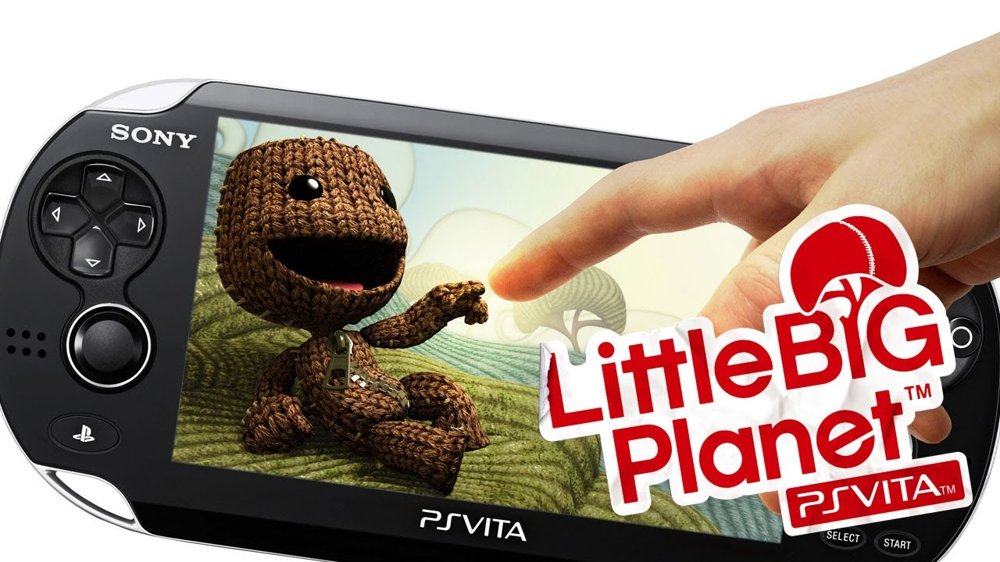

Little Nightmares 2
2018-2020
- Platforms: PC, PS4, Xbox, Nintendo Switch
- Team: Tarsier Studios - About 50 people
- Role: Intermediate Level Designer
- Steampage
During my two years at Tarsier Studios I worked as a Level designer creating levels for critically acclaimed Little Nightmares 2, using Unreal Engine 4. I designed puzzles, platforming sections and stealth scenarios. I also worked closely with Blueprints - implementing, polishing and bugfixing hand crafted puzzle interactions as well as scripting the game's many AI encounters.
Read more
Drillbird
March 2025
- Platforms: Web Browser, PC & Mac
- Team: Developed by myself with art and music contributions from friends
- Genre: Digging/Platforming Adventure Timeline:4 Months
- Responsibilities: Creative vision, Game Design, Programming, Art
- Play Drillbird on itch.io
Drillbird is a ~1-5h digging platformer where you play as a bird with a drill as its beak, drilling your way through the world to find ores in order to make your egg hatch. I developed the game over three months after the studio I previously worked at shut down. I think it's a good testament to my game design, programming and planning skills.
Read more
Two unannounced SteamWorld Games
2020-2024
- Platforms: Consoles, PC and Mobile
- Team: Thunderful Malmö - Started in a team of 5, grew to ~25 over four years
- Genres: hush hush
- Roles: Game Designer, then Lead Game Designer, finally Game Director
During my four years at Thunderful we worked on multiple projects which have not been announced at the time of writing. While I cannot show any work publicly due to NDA agreements, I've written a summary of my roles below. Please also refer to Drillbird for a recent example of my game and level design skills.
- Game Director - 1.5 years. Unannounced SteamWorld project for Consoles and PC.
- Responsible for the game’s holistic creative vision and quality
- Directed the teams work across disciplines, providing feedback and guidance for a team of ~25 developers
- Directed the game’s narrative.
- Established milestone goals and planning together with the Producer & Leads
- Lead Designer - 1 year. Unannounced SteamWorld project for Consoles and PC.
- Managed a team of four designers
- Provided feedback on the design team’s work and ensured it met expectations.
- Worked closely with the other leads, producer and game director to plan our work, solve dependencies and reach milestones.
- Worked on content, system and narrative design.
- Game Designer - 1.5 years. Unannounced SteamWorld project for Mobile devices
- As one of the studio's first hires, I had the pleasure of handling all things related to game design, except for level design which a colleague handled.
- I focused on game rules, feature design, balancing, UI design, playtesting as well as defining and implementing the story.
Birds with Feelings
2022
- Platforms: Steam
- Team: Bird Pals SIA - 2 core members, 6 contributors in total
- Genre: Turn Based Strategy
- Timeline: Four years during freetime while working at Tarsier and Thunderful
- Role: Game Design, Level Design, All of the art
- Click to go to Steampage
Birds with feelings is a cozy turn-based strategy game about manipulating feelings for the greater good. The game was created over four years during my freetime while working professionally. It's ~3 hours long featuring a fully-fledged story and campaign.
Frog Climbers
2016
- Platforms: Steam
- Team: TeamCrew - 4 person team formed specifically to finish Frog Climbers, which started as a student project
- Publisher: Dear Villagers
- Genre: Party Game
- Role: Game Design & Level Design
- Game Page
Frog Climbers started out as a Student Project for one of our game creation courses. After recieving a lot of positive feedback, such as winning the Game Design award at the student game development competition Swedish Game Awards, we decided to flesh out the initial prototype and release the game commercially. We managed to secure Dear Villagers as a distributor and released the game on Steam in 2016.
The game is no longer availale on Steam as we decided to close down the company we released it with - but there's a lot of videos showcasing the game.
Here is some single player gameplay and here's some four player footageLittleBigPlanet Vita
2012
- Platforms: Playstation Vita
- Team: Tarsier Studios - about ~20 people at the time
- Publisher: SONY Entertainment
- Genre: Platformer
- Role: Junior Level Designer
- Wikipedia page
I started out creating games in 2008 making levels for LittleBigPlanet for fun. At the tender age of 16, in 2011 I was hired over a summer by Tarsier Studios to create levels and minigames for LittleBigPlanet Vita. This gig convinced me that game development was a valid career choice - I have been making games ever since.
As a level designer, I designed multiple minigames for the game such as this tower building game, as well as this boxing game.
Aside from my time at Tarsier, I was a very active LittleBigPlanet level designer from 2008 - 2014, creating levels for fun. This is where I picked up the majority of my level design skills.
For example, I created
- Help Yourself - A puzzle platformer focusing on a cloning gimmick. This level was accompanied by a youtube series where I documented the creation process of the level.
- Flowerbucket - A storydriven puzzle platformer where I dealt with my first breakup.
- My Little Pony: Racing is magic - A My Little Pony tribute racing game